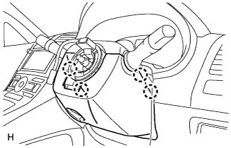
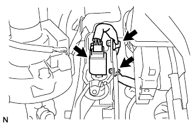
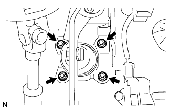

Brake Pedal Support Assembly Removal |
| 1. Disconnect Battery Negative Terminal |
Reference| 2. Remove Instrument Cluster Finish Panel Assembly |
Operate the tilt lever to lower the steering wheel.
 |
Apply protective tape to the positions shown in the illustration.
 |
Disengage the 9 clips and 2 claws, and remove the instrument cluster finish panel.
| 3. Remove Combination Meter Assembly |
 |
Remove the 4 screws.
 |
Pull the combination meter assembly toward the rear of the vehicle, disconnect the connectors, and remove the combination meter assembly.
| 4. Remove Steering Wheel Cover Lower NO.3 |
 |
Disengage the claws and remove the steering wheel cover lower No.3.
| 5. Remove Steering Wheel Cover Lower NO.2 |
 |
Disengage the claws and remove the steering wheel cover lower No.2.
| 6. Remove Horn Button Assembly |
 |
Using a torx socket wrench (T30), loosen the 2 torx bolts until they turn freely.
Using needle-nose pliers, pull out the 2 torx bolts.
 |
Pull the horn button assembly toward the rear of the vehicle.
 |
Using a thin-bladed screwdriver with its tip wrapped with protective tape, release the lock of the airbag connector.
Disconnect the airbag connector and horn connector, and remove the horn button assembly.
| 7. Remove Steering Wheel Assembly |
Operate the tilt and telescopic mechanisms and fix the steering column assembly in its most extended and highest position.
 |
Remove the nut and put matchmarks on the steering wheel assembly and steering column assembly.
 |
Using SST, remove the steering wheel assembly.
| 8. Remove Steering Column Cover |
Release the tilt lever.
 |
Push the steering column cover (lower side) from the left and right to disengage the 4 claws.
 |
Insert a finger through the tilt lever opening of the steering column cover (lower side) and disengage the claw.
 |
Disengage the 2 claws and remove the steering column cover (lower side).
 |
Disengage the 2 claws and pins, and remove the steering column cover (upper side).
| 9. Remove Instrument Panel Under Cover Sub-assembly NO.1 |
| 10. Remove Instrument Panel Airbag Assembly LWR NO.1 |
 |
Remove the 4 bolts.
 |
Detach the instrument lower airbag No.1 from the 6 claws and 2 guides.
 |
Disconnect the connector and remove the instrument lower airbag No.1.
| 11. Remove Brake Pedal Return Spring |
 |
Remove the brake pedal return spring from the brake pedal support.
| 12. Disconnect Brake Master Cylinder Push Rod Clevis |
Remove the clip and push rod clevis pin, and disconnect the brake master cylinder push rod clevis from the brake pedal.
| 13. Remove Brake Pedal Support Sub-assembly |
 |
Disconnect the stop light switch connector and disengage the 2 clamps.
 |
Remove the bolt and disconnect the brake pedal support from the instrument panel reinforcement.
 |
Remove the 4 nuts and the brake pedal support.